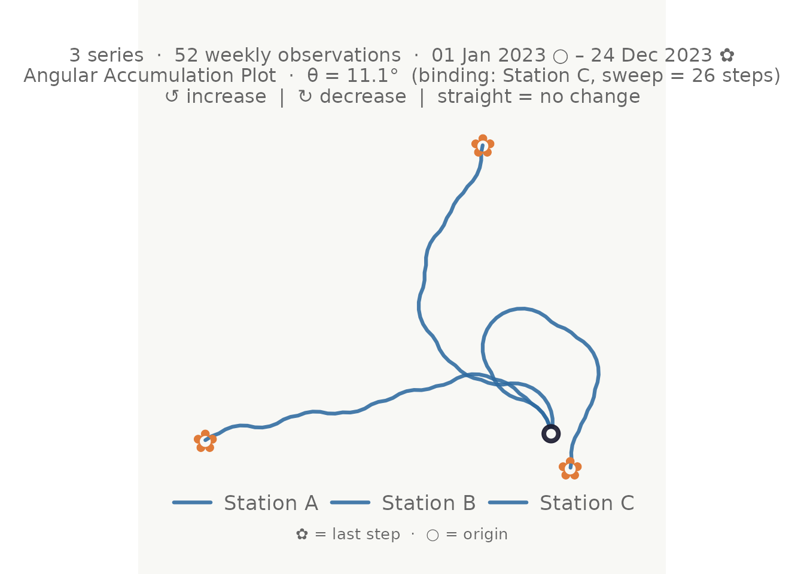
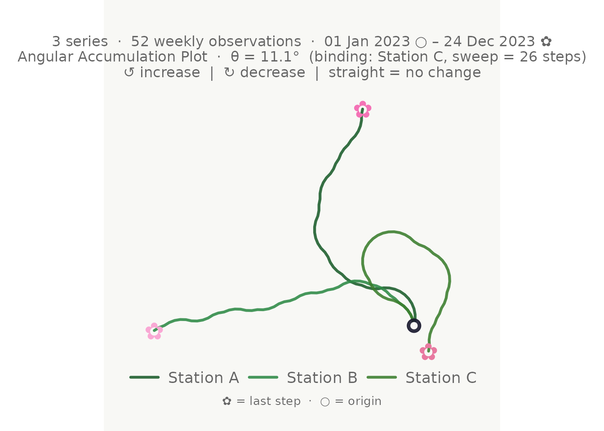
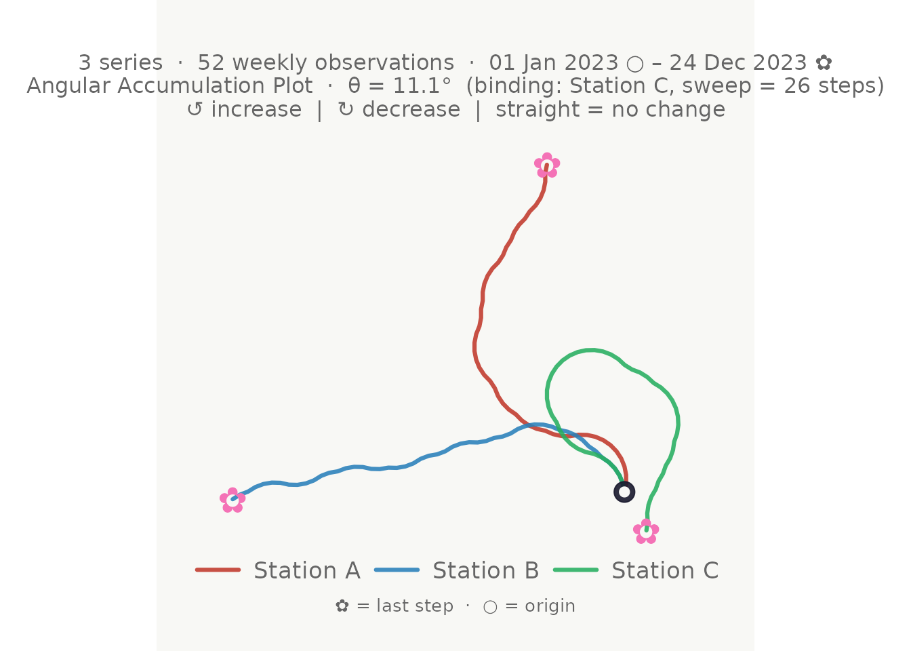
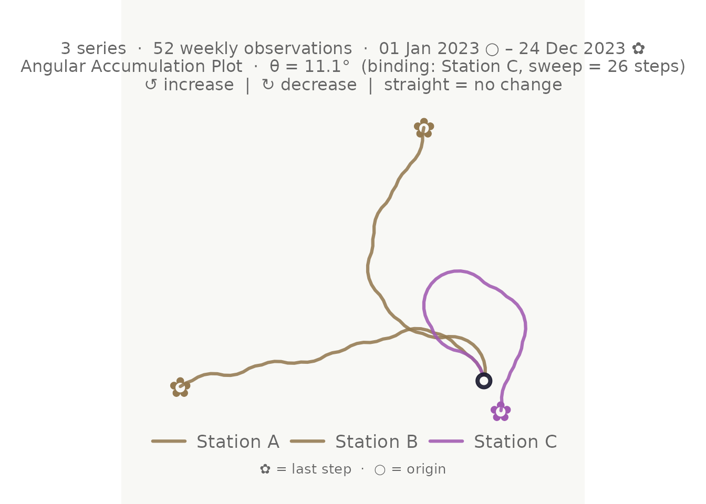
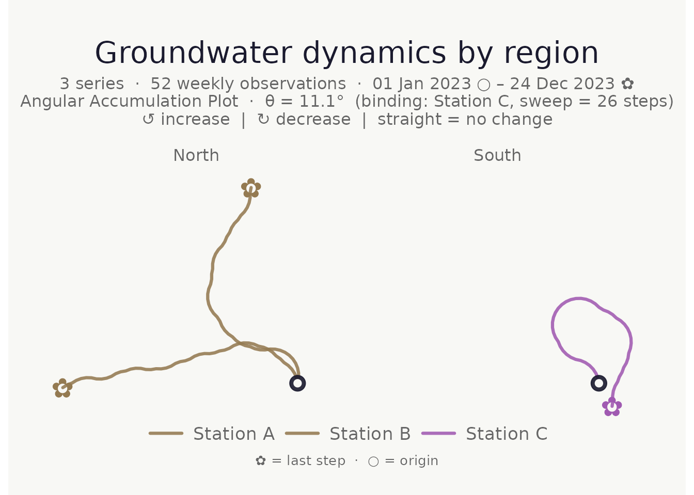
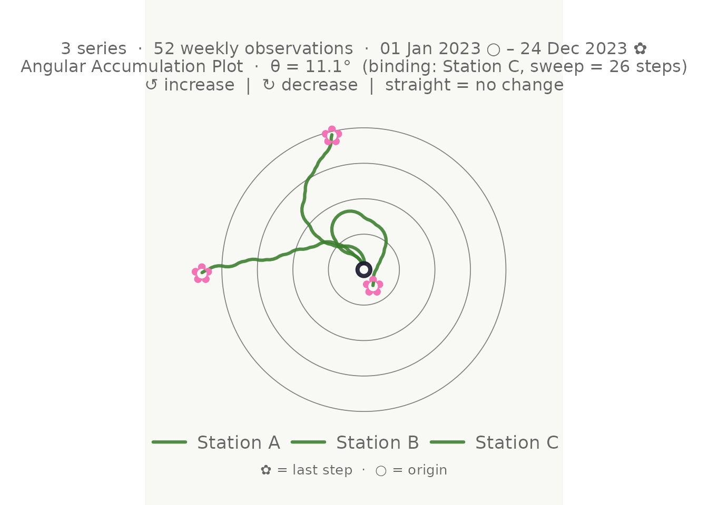
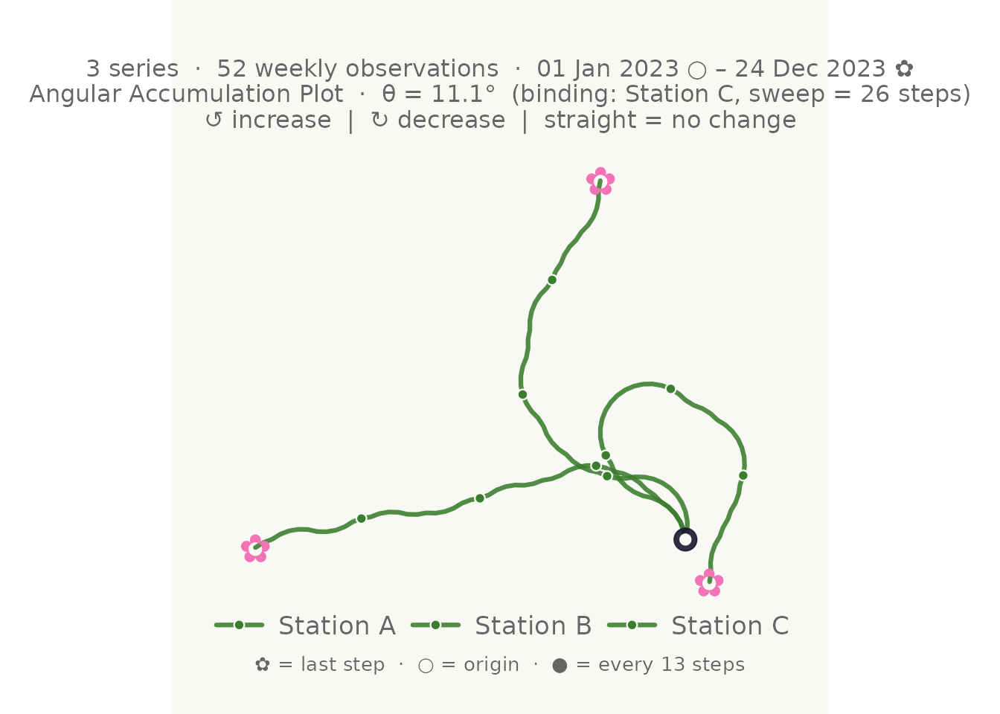
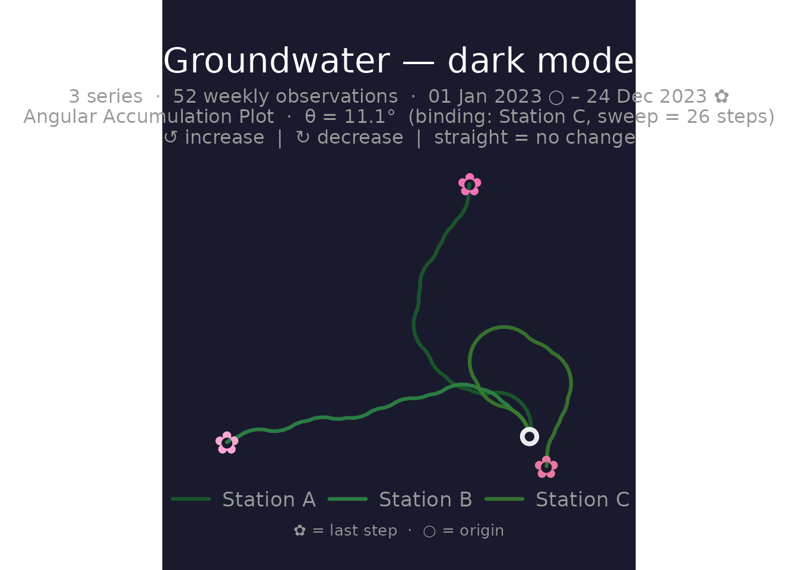
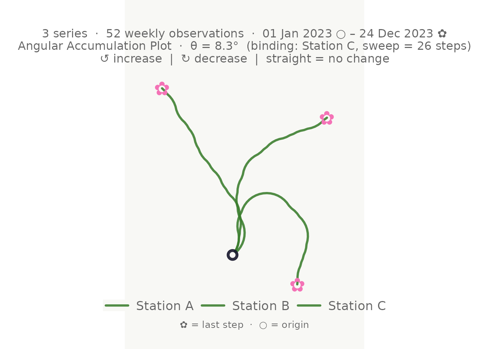
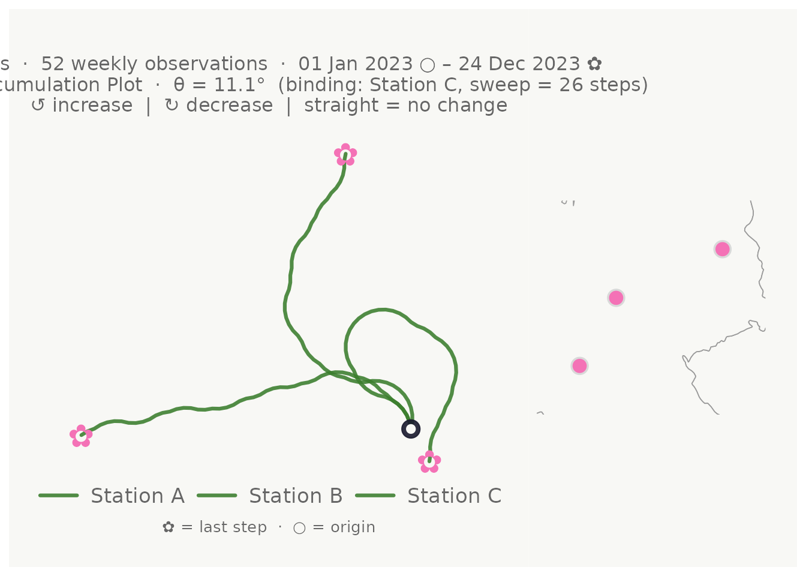

What is a bouquet plot?
A bouquet plot (also called an angular accumulation plot) converts the directional dynamics of a time series into a 2-D turtle-graphics path:
- Each increase turns the heading left by a fixed angle .
- Each decrease turns it right by .
- No change keeps the heading straight.
All series share the same origin and angle, so paths that look alike come from series with similar up/down patterns — not necessarily similar values. The technique is structurally related to DNA walk visualisations (Gates 1986).
Minimal example
set.seed(42)
n <- 52L
weeks <- seq(as.Date("2023-01-01"), by = "week", length.out = n)
season <- sin(seq(0, 2 * pi, length.out = n))
gw_long <- tibble::tibble(
week = rep(weeks, 3L),
station = rep(c("Station A", "Station B", "Station C"), each = n),
region = rep(c("North", "North", "South"), each = n),
level_m = c(
8.5 + 0.8 * season + cumsum(rnorm(n, 0.00, 0.18)),
7.2 + 0.5 * season + cumsum(rnorm(n, 0.02, 0.22)),
9.1 + 1.1 * season + cumsum(rnorm(n, -0.01, 0.15))
)
)
make_plot_bouquet(gw_long,
time_col = week,
series_col = station,
value_col = level_m,
verbose = FALSE
)
Column order defaults make the call even shorter when your data is
already in the right column order:
make_plot_bouquet(gw_long, verbose = FALSE).
Colour modes
Both stem_colors (the path lines) and
flower_colors (the ✿ end markers) accept four different
types of input.
1 — Single hex colour
make_plot_bouquet(gw_long,
time_col = week,
series_col = station,
value_col = level_m,
stem_colors = "#2d6a9f",
flower_colors = "#e07b39",
verbose = FALSE
)
2 — Named keywords
"greens" and "blossom" select curated
palettes:
make_plot_bouquet(gw_long,
time_col = week,
series_col = station,
value_col = level_m,
stem_colors = "greens",
flower_colors = "blossom",
verbose = FALSE
)
3 — Vector of hex colours (one per series)
make_plot_bouquet(gw_long,
time_col = week,
series_col = station,
value_col = level_m,
stem_colors = c("#c0392b", "#2980b9", "#27ae60"),
verbose = FALSE
)
4 — Column reference
Pass a bare column name. Each unique value in that column gets a
distinct perceptually uniform colour (via
hues::iwanthue()):
make_plot_bouquet(gw_long,
time_col = week,
series_col = station,
value_col = level_m,
stem_colors = region,
flower_colors = region,
verbose = FALSE
)
Faceting
facet_by accepts any column name and splits the plot via
ggplot2::facet_wrap():
make_plot_bouquet(gw_long,
time_col = week,
series_col = station,
value_col = level_m,
stem_colors = region,
flower_colors = region,
facet_by = region,
title = "Groundwater dynamics by region",
verbose = FALSE
)
Visual options
Reference rings
show_rings = TRUE adds faint concentric circles at fixed
radii to aid distance judgements:
make_plot_bouquet(gw_long,
time_col = week,
series_col = station,
value_col = level_m,
show_rings = TRUE,
verbose = FALSE
)
Step markers
marker_every places a dot at every N-th step, useful for
reading temporal progress:
make_plot_bouquet(gw_long,
time_col = week,
series_col = station,
value_col = level_m,
marker_every = 13L, # quarterly for weekly data
verbose = FALSE
)
Dark mode
make_plot_bouquet(gw_long,
time_col = week,
series_col = station,
value_col = level_m,
stem_colors = "greens",
flower_colors = "blossom",
dark_mode = TRUE,
title = "Groundwater — dark mode",
verbose = FALSE
)
Launch direction and ceiling percentage
launch_deg sets the initial heading (90° = upward, the
default). ceiling_pct controls how tight the turns are:
values close to 1 make turns pronounced; smaller values leave more
headroom before a loop would occur.
make_plot_bouquet(gw_long,
time_col = week,
series_col = station,
value_col = level_m,
launch_deg = 45,
ceiling_pct = 0.60,
verbose = FALSE
)
Clustering with cluster_bouquet()
cluster_bouquet() groups series by the similarity of
their directional sequences and appends a cluster factor
column. The result plugs directly into
make_plot_bouquet().
set.seed(42)
n_big <- 52L
weeks <- seq(as.Date("2023-01-01"), by = "week", length.out = n_big)
season <- sin(seq(0, 2 * pi, length.out = n_big))
gw6 <- tibble::tibble(
week = rep(weeks, 6L),
station = rep(paste0("S", 1:6), each = n_big),
level_m = c(
8.5 + 0.8 * season + cumsum(rnorm(n_big, 0.00, 0.2)),
8.3 + 0.7 * season + cumsum(rnorm(n_big, 0.01, 0.2)),
7.2 + 0.5 * season + cumsum(rnorm(n_big, 0.02, 0.2)),
7.0 + 0.6 * season + cumsum(rnorm(n_big, 0.00, 0.2)),
9.1 + 1.1 * season + cumsum(rnorm(n_big, -0.01, 0.2)),
9.3 + 1.0 * season + cumsum(rnorm(n_big, -0.02, 0.2))
)
)
clustered <- cluster_bouquet(gw6,
time_col = week,
series_col = station,
value_col = level_m,
verbose = FALSE
)
dplyr::distinct(clustered, station, cluster)
#> # A tibble: 6 × 2
#> station cluster
#> <chr> <fct>
#> 1 S1 C1
#> 2 S2 C3
#> 3 S3 C2
#> 4 S4 C1
#> 5 S5 C4
#> 6 S6 C2Colour and facet the bouquet by cluster in one pipe:
clustered |>
make_plot_bouquet(
time_col = week,
series_col = station,
value_col = level_m,
stem_colors = cluster,
flower_colors = cluster,
facet_by = cluster,
title = "Series grouped by directional dynamics",
verbose = FALSE
)
Clustering methods
Five algorithms are available via the method
argument:
| Method | Description |
|---|---|
"pca_hclust" |
(default) PCA compression + Ward’s D2 hclust. Best for long series. |
"pca_kmeans" |
PCA + k-means. Faster for many series. |
"hclust" |
Ward’s D2 directly on direction sequences. Good for short series. |
"kmeans" |
k-means on raw sequences. |
"pam" |
Partitioning Around Medoids. Cluster centres are real observed series. |
The distance argument ("euclidean",
"correlation", "manhattan") applies to
"hclust" and "pam". Correlation distance
measures whether two series co-move regardless of
amplitude, which is often the most meaningful choice for hydrological
data:
cluster_bouquet(gw6,
time_col = week,
series_col = station,
value_col = level_m,
method = "hclust",
distance = "correlation",
verbose = FALSE
) |>
dplyr::distinct(station, cluster)
#> # A tibble: 6 × 2
#> station cluster
#> <chr> <fct>
#> 1 S1 C1
#> 2 S2 C3
#> 3 S3 C2
#> 4 S4 C1
#> 5 S5 C4
#> 6 S6 C2Automatic k selection
When k = "auto" (default), the function fits the model
for
and selects the k that maximises:
The worst-cluster term
prevents choosing a k where any one cluster is poorly defined. The
resolution exponent rewards finer groupings while they
remain well-separated. Increase it to push toward more clusters:
cluster_bouquet(gw6,
time_col = week,
series_col = station,
value_col = level_m,
resolution = 1.5,
verbose = FALSE
) |>
dplyr::distinct(station, cluster)
#> # A tibble: 6 × 2
#> station cluster
#> <chr> <fct>
#> 1 S1 C1
#> 2 S2 C3
#> 3 S3 C2
#> 4 S4 C1
#> 5 S5 C4
#> 6 S6 C2Fix k directly when you already know how many groups you need:
cluster_bouquet(gw6,
time_col = week,
series_col = station,
value_col = level_m,
k = 2L,
verbose = FALSE
) |>
dplyr::distinct(station, cluster)
#> # A tibble: 6 × 2
#> station cluster
#> <chr> <fct>
#> 1 S1 C2
#> 2 S2 C1
#> 3 S3 C1
#> 4 S4 C2
#> 5 S5 C1
#> 6 S6 C1Location map panel
When coordinate columns are supplied,
make_plot_bouquet() attaches a location map to the right of
the bouquet. Points are coloured to match the flower markers. The map
background is drawn from the maps package (country
outlines) or mapdata (sub-national boundaries) if
installed.
Coordinates in WGS84 decimal degrees work directly. For projected
coordinates supply the EPSG code via coord_crs:
# Example with decimal-degree coordinates
gw_coords <- dplyr::mutate(gw_long,
lon = c(rep(9.9, n), rep(13.4, n), rep(8.7, n)),
lat = c(rep(51.5, n), rep(52.5, n), rep(50.1, n))
)
make_plot_bouquet(gw_coords,
time_col = week,
series_col = station,
value_col = level_m,
lon_col = lon,
lat_col = lat,
map_width = 0.35,
verbose = FALSE
)
map_width controls the relative width of the map panel
(default 0.35 = 35 % of the combined figure width). The map
is automatically zoomed and padded around the point locations, and works
for any country or region.
Combining everything
cluster_bouquet(
time_col = date,
series_col = well_id,
value_col = gwl,
method = "pca_hclust",
distance = "euclidean",
resolution = 0.8
) |>
make_plot_bouquet(
time_col = date,
series_col = well_id,
value_col = gwl,
stem_colors = cluster,
flower_colors = cluster,
facet_by = cluster,
lon_col = easting,
lat_col = northing,
coord_crs = 3035,
show_rings = TRUE,
dark_mode = TRUE,
title = "Groundwater dynamics by directional cluster",
verbose = FALSE
)